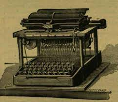
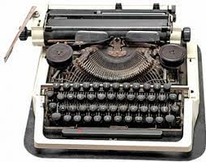

Az első írógépek olyképpen voltak szerkesztve, hogy egy emeltyűrúdon voltak az egyes betűk és jelek a nyomdai betűk módjára kivésve és a rudat kellett egy nyíláshoz előre-hátra mozgatni aszerint, amilyen betűt akartak lenyomtatni.

Később kör alakú lemezt használtak, melyen épp úgy voltak a betűk alkalmazva, mint az előbbin és egy fogantyúval kellett a lemezt az írónyíláshoz forgatni.
A betűváltó (Shift billentyű) először egy 1878-as Remington modellen jelent meg, azt megelőzően csupa nagybetűs írásmódot használtak.
